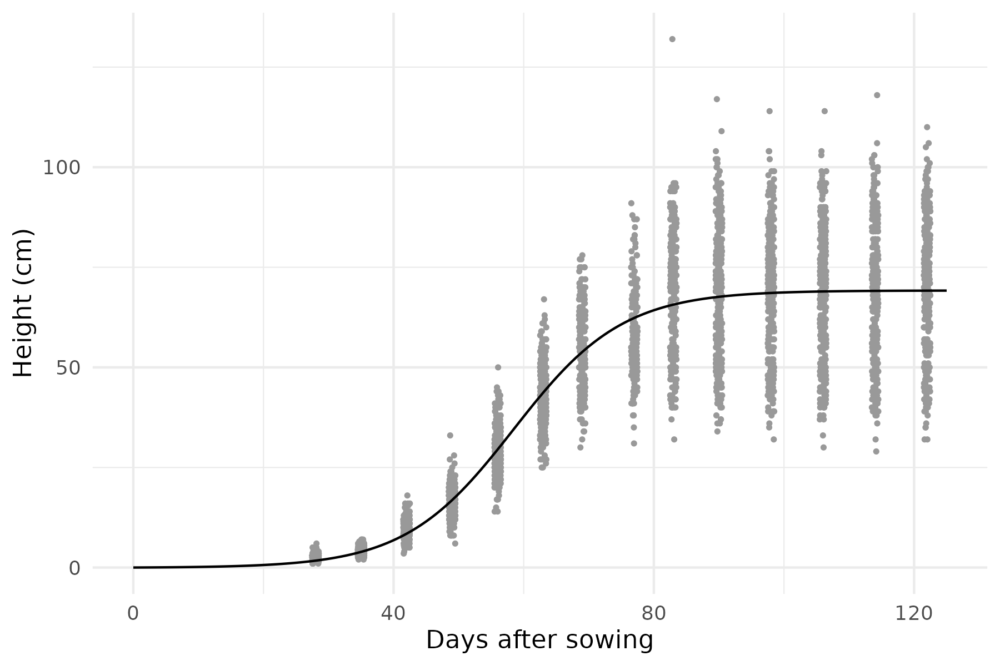
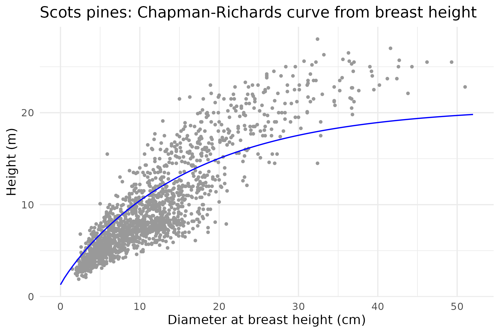
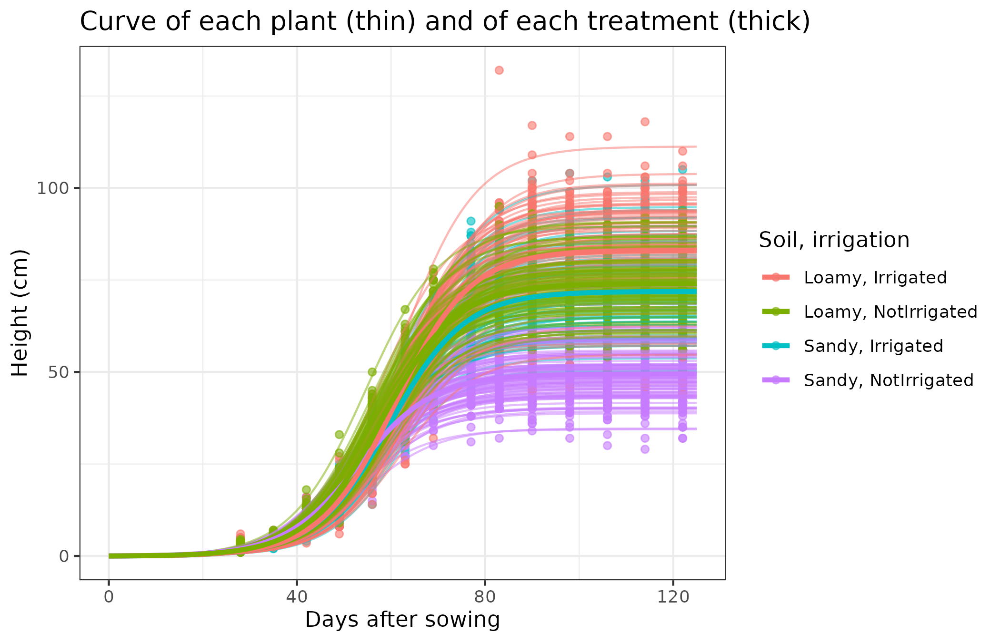

The package gcTMB fits growth curves over time by maximum likelihood with the Template Model Builder (TMB). The curves can depend on covariates, have random effects for repeated measurements of the same individuals, and have autocorrelated residuals, and the response can follow a range of distributions. This overview shows most of the features in one document, with short examples; four vignettes go into each topic in depth:
-
Growth models and their parameters
(
vignette("growth-models")): the formulas of the growth models, the meaning of their parameters, inflection points and maximum growth rates, fitting and comparing the models, confidence intervals and simple treatment effects; -
Fixed and random effects
(
vignette("fixed-random-effects")): covariates and random effects of the parameters, likelihood ratio and F-tests of their inclusion, and count data; -
Timing and maximum growth rates
(
vignette("timing-rates")):timeto()andmaxrate()with treatment and genotype effects, the maximum growth rate as a parameter, and pairwise comparisons; -
Autocorrelation and simulation
(
vignette("autocorrelation-simulation")): autocorrelated residuals within individuals, and simulation studies, including the recovery of the autocorrelation parameter.
Growth models
The growth models are curves that increase from 0, or from the intercept for the Chapman-Richards and Korf curves, towards the asymptote . The logistic, Gompertz, Hill, Weibull, beta, normal and gamma curves are sigmoid growth curves, often used in agronomy and ecology; the Chapman-Richards and Korf curves are height-diameter models, common in forestry; and the Preece-Baines curve is a model of human growth in height. The explanatory variable is usually time, but can be any variable along which the response grows towards an asymptote, e.g. the diameter of trees in a height-diameter model:
| Model | |||
|---|---|---|---|
| logistic | inflection point, half the asymptote | scale | |
| gompertz | inflection point | scale | |
| hill | half the asymptote | slope on the log time axis | |
| weibull | inflection point | shape | |
| beta | , zero again at | inflection point | end of growth |
| beta_capped | the same up to , and from on | inflection point | end of growth |
| normal | inflection point, half the asymptote | scale | |
| gamma | inflection point | shape | |
| chapmanrichards | rate | shape | |
| korf | coefficient, | shape, | |
| preecebaines | middle of puberty | height at | |
| linear | intercept | not used |
Two further parameters complete the curves: the threshold
,
before which a truncated curve is zero (by default fixed at 0, the time
of sowing; fix = c(b4 = FALSE) estimates it), and the
asymmetry
(by default fixed at 1, the curves above;
fix = c(b5 = FALSE) estimates it, e.g. the Richards curve
for the logistic model). The beta, Chapman-Richards and Korf curves are
never truncated and have no asymmetry; the beta curve falls back to zero
after its maximum at the end of growth
,
while "beta_capped" stays at it:
is the start of growth of the beta curve, and the intercept of the other
two (by default the breast height of 1.3 m of a height-diameter model;
start = c(b4 = 0) for a curve from zero); the
Chapman-Richards curve is the Richards curve with a negative asymmetry.
The Preece-Baines curve of human growth in height has the rates
and
of growth before and during puberty, estimated by default. With
b1type = "rate",
is the maximum growth rate instead of the asymptote. Each parameter can
have a link, e.g. link = c(b3 = "inverse") for the rate
or link = c(b1 = "log") for effects as ratios. The vignette
Growth models and their parameters gives all the formulas, the
inflection points and maximum growth rates of each model, and the
asymmetric curves.
Fitting a growth curve
The data set FabaHeights26 contains the heights (cm) of
320 faba bean plants in a field trial, five plants on each of 64 plots,
with four genotypes on two soil types, irrigated or not, measured on 14
days between 28 and 122 days after sowing (DAS).
gcTMB() takes the response and the time in the formula and
the growth model in model; starting values are found
automatically (gcTMBstart()).
library(gcTMB)
library(ggplot2)
fit <- gcTMB(Height ~ DAS, data = FabaHeights26, model = "logistic")
summary(fit)
#> Call:
#> gcTMB(form = Height ~ DAS, data = FabaHeights26, model = "logistic")
#>
#> Model: logistic, truncated at b4 = 0
#> Family: gaussian, identity link for all parameters
#>
#> Number of observations: 4315
#> Log-likelihood: -16742 (df = 4), AIC: 33493, BIC: 33518
#>
#> Coefficients:
#> Estimate Std. Error
#> b1:(Intercept) 69.197 0.300
#> b2:(Intercept) 58.469 0.205
#> b3:(Intercept) 8.383 0.182
#>
#> Residual standard deviation: 11.72 on 4312 degrees of freedom
#>
#> Optimiser: relative convergence (4), maximum absolute gradient 2.7e-06The growth models are compared by information criteria, e.g. AIC or
the criteria of criteria():
fits <- lapply(c(logistic = "logistic", gompertz = "gompertz", hill = "hill", weibull = "weibull",
beta = "beta", beta_capped = "beta_capped", normal = "normal", gamma = "gamma",
chapmanrichards = "chapmanrichards", korf = "korf", preecebaines = "preecebaines",
linear = "linear"),
# the forestry curves from zero at sowing, instead of their default breast height of 1.3
function(m) gcTMB(Height ~ DAS, data = FabaHeights26, model = m,
start = if (m %in% c("chapmanrichards", "korf")) c(b4 = 0)))
#> Warning: the optimiser did not converge: singular convergence (7)
criteria(fits, which = c("AIC", "BIC"))
#> AIC BIC
#> logistic 33492.78 33518.26
#> gompertz 33603.23 33628.71
#> hill 33551.00 33576.48
#> weibull 33486.91 33512.39
#> beta 34275.95 34301.43
#> beta_capped 33517.79 33543.27
#> normal 33493.81 33519.29
#> gamma 33535.44 33560.92
#> chapmanrichards 33606.41 33631.89
#> korf 33708.72 33734.20
#> preecebaines 33491.05 33529.27
#> linear 35753.14 35772.25predict() gives confidence intervals of the mean by the
delta method and prediction intervals of new observations;
confint() gives profile likelihood (default), Wald or
parametric bootstrap intervals of the parameters, and
bootstrap() a bootstrap sample to reuse.
plot() draws validation plots of the residuals and the
fitted curves.
nd <- data.frame(DAS = seq(0, 125, by = 0.5))
ci <- cbind(nd, predict(fit, newdata = nd, interval = "confidence"))
pi <- cbind(nd, predict(fit, newdata = nd, interval = "prediction"))
ggplot(FabaHeights26, aes(x = DAS, y = Height)) +
geom_ribbon(data = pi, aes(x = DAS, ymin = lwr, ymax = upr), inherit.aes = FALSE, fill = "red", alpha = 0.1) +
geom_point(colour = "grey60", size = 0.6, position = position_jitter(width = 0.5, height = 0)) +
geom_ribbon(data = ci, aes(x = DAS, ymin = lwr, ymax = upr), inherit.aes = FALSE, fill = "red", alpha = 0.35) +
geom_line(data = ci, aes(y = fit), colour = "red") +
labs(x = "Days after sowing", y = "Height (cm)",
title = "Logistic curve with 95% confidence (dark) and prediction (light) intervals") +
theme_minimal()
confint(fit, method = "wald")
#> 2.5 % 97.5 %
#> b1:(Intercept) 68.609783 69.784886
#> b2:(Intercept) 58.066586 58.870628
#> b3:(Intercept) 8.025585 8.740651
#> sigma 11.473127 11.967608Other data sets
The other faba bean data sets, FabaHeights25 (heights of
25 plants grown in tubes at five treatment levels) and
FabaCounts23 (counts of pods), are used in the vignettes
Growth models and their parameters and Fixed and random
effects, and for the counts below. Besides the faba bean data, the
package has growth data from other fields: BerkeleyGrowth
(heights and weights of children from birth to 21 years, used in the
vignette Timing and maximum growth rates with the Preece-Baines
curve), SorghumMaize (biomass of three crops at two input
levels, used in the vignette Autocorrelation and simulation
with the beta curve) and PineHeightDiameter (heights and
diameters of Scots pine trees, used in the vignette Fixed and random
effects). The x-axis need not be time: in a height-diameter model
the height grows with the diameter, from the breast height of 1.3 m, the
intercept
of the Chapman-Richards curve:
fithd <- gcTMB(height ~ dbh, rform = b1 ~ 1 | plot, data = PineHeightDiameter,
model = "chapmanrichards", start = c(b4 = 1.3))
nd <- data.frame(dbh = seq(0, 52, by = 0.5))
ggplot(PineHeightDiameter, aes(x = dbh, y = height)) +
geom_point(colour = "grey60", size = 0.8) +
geom_line(data = cbind(nd, height = predict(fithd, newdata = nd, random = FALSE)), colour = "blue") +
labs(x = "Diameter at breast height (cm)", y = "Height (m)",
title = "Scots pines: Chapman-Richards curve from breast height") +
theme_minimal()
Fixed and random effects
Covariates on the parameters are formulas in fform, and
random effects in rform, as in nlme::nlme.
Here the soil type and the irrigation, and their interaction, act on the
asymptote
and the time of the maximum growth rate
,
and each plant has correlated random effects on both:
fitre <- gcTMB(Height ~ DAS, fform = b1 + b2 ~ Soil * Treatment, rform = b1 + b2 ~ 1 | Plant_ID,
data = FabaHeights26)
fitre
#> Call:
#> gcTMB(form = Height ~ DAS, fform = b1 + b2 ~ Soil * Treatment,
#> rform = b1 + b2 ~ 1 | Plant_ID, data = FabaHeights26)
#>
#> Model: logistic, truncated at b4 = 0
#> Family: gaussian, identity link for all parameters
#>
#> Coefficients:
#> b1:(Intercept) b1:SoilSandy
#> 83.080 -11.185
#> b1:TreatmentNotIrrigated b1:SoilSandy:TreatmentNotIrrigated
#> -9.083 -13.350
#> b2:(Intercept) b2:SoilSandy
#> 60.917 -1.153
#> b2:TreatmentNotIrrigated b2:SoilSandy:TreatmentNotIrrigated
#> -2.892 -3.749
#> b3:(Intercept)
#> 7.955
#>
#> Random effects:
#> Groups Name Std.Dev. Corr
#> Plant_ID b1 9.483
#> b2 2.194 0.35
#>
#> Residual standard deviation: 3.709
trts <- expand.grid(Soil = c("Loamy", "Sandy"), Treatment = c("Irrigated", "NotIrrigated"))anova() gives likelihood ratio tests of nested models,
for the fixed effects and for the random effects;
test = "boot" a parametric bootstrap test, and
test = "F" F-tests for models without random effects.
fitre0 <- gcTMB(Height ~ DAS, fform = b1 + b2 ~ Soil + Treatment, rform = b1 + b2 ~ 1 | Plant_ID,
data = FabaHeights26)
anova(fitre0, fitre)
#> Likelihood ratio tests of gcTMB models
#>
#> npar AIC BIC logLik deviance LR Df Pr(>LR)
#> fitre0 11 25367 25437 -12672 25345
#> fitre 13 25313 25396 -12644 25287 57.771 2 2.852e-13 ***
#> ---
#> Signif. codes: 0 '***' 0.001 '**' 0.01 '*' 0.05 '.' 0.1 ' ' 1plot(type = "curves") draws the curves of the plants and
the population curves of the treatments:
p <- plot(fitre, type = "curves", times = seq(0, 125, by = 0.5), draw = FALSE)
p$curves + labs(x = "Days after sowing", y = "Height (cm)", colour = "Soil, irrigation",
title = "Curve of each plant (thin) and of each treatment (thick)")
fixef(), ranef() and VarCorr()
extract the fixed effects, the predicted random effects and their
covariance matrices. Random effects can have several terms, nested or
crossed grouping factors, and random slopes; see the vignette Fixed
and random effects.
Count data and other distributions
The family argument gives the distribution of the
response: “gaussian”, “lognormal”, “poisson”, “nbinom2”, “nbinom1”,
“binomial”, “betabinomial” or “beta”. The data set
FabaCounts23 contains the numbers of pods of 22 plants of
six genotypes; the plants have no pods at the first counts, so the
threshold
,
the time of the first pods, is estimated.
fitp <- gcTMB(pods ~ DAS, fform = b1 + b2 ~ Genotype, rform = b1 ~ 1 | Tube_ID, data = FabaCounts23,
family = "poisson", fix = c(b4 = FALSE))
genotypes <- data.frame(Genotype = sort(unique(FabaCounts23$Genotype)))
cbind(genotypes, predict(fitp, newdata = genotypes, type = "parameters", random = FALSE))
#> Genotype b1 b2 b3 b4
#> 1 Aurora 14.599634 70.05332 1.338935 65
#> 2 Capri 11.197618 69.20292 1.338935 65
#> 3 ILB938 9.120981 69.04494 1.338935 65
#> 4 Lynx 19.581583 72.79718 1.338935 65
#> 5 Melodie 25.297268 73.29758 1.338935 65
#> 6 Navara 17.779358 72.65387 1.338935 65plot() checks a count model with randomised quantile
residuals (Dunn and Smyth, 1996), which are standard normal under the
model. The simulations of simulate() can also be used for
simulation-based residuals, e.g. with the package DHARMa; see the
vignette Fixed and random effects.
Timing and maximum growth rates
timeto() gives the times at which the curves reach a
percentage of their asymptote (or a given response,
type = "absolute"), and maxrate() the maximum
growth rate, its timing and the fraction of the asymptote reached then,
with standard errors by automatic differentiation and the delta method,
and confidence intervals by confint():
timeto(fitre, level = 90, newdata = trts, random = FALSE)
#> Times to reach the percentages of the asymptote:
#>
#> Estimate Std.Error
#> 90%:Soil=Loamy,Treatment=Irrigated 78.4 0.298
#> 90%:Soil=Sandy,Treatment=Irrigated 77.2 0.302
#> 90%:Soil=Loamy,Treatment=NotIrrigated 75.5 0.300
#> 90%:Soil=Sandy,Treatment=NotIrrigated 70.6 0.321
maxrate(fitre, newdata = trts)
#> Time of the maximum growth rate (tmax), maximum growth rate (rate) and proportion of total growth at inflection (fraction):
#>
#> Estimate Std.Error
#> tmax:Soil=Loamy,Treatment=Irrigated 60.917 2.68e-01
#> rate:Soil=Loamy,Treatment=Irrigated 2.612 3.75e-02
#> fraction:Soil=Loamy,Treatment=Irrigated 0.500 1.43e-05
#> tmax:Soil=Sandy,Treatment=Irrigated 59.764 2.75e-01
#> rate:Soil=Sandy,Treatment=Irrigated 2.261 3.65e-02
#> fraction:Soil=Sandy,Treatment=Irrigated 0.500 1.66e-05
#> tmax:Soil=Loamy,Treatment=NotIrrigated 58.025 2.71e-01
#> rate:Soil=Loamy,Treatment=NotIrrigated 2.327 3.68e-02
#> fraction:Soil=Loamy,Treatment=NotIrrigated 0.500 2.00e-05
#> tmax:Soil=Sandy,Treatment=NotIrrigated 53.123 2.97e-01
#> rate:Soil=Sandy,Treatment=NotIrrigated 1.556 3.51e-02
#> fraction:Soil=Sandy,Treatment=NotIrrigated 0.499 3.68e-05With b1type = "rate",
is the maximum growth rate, so that covariates on
are effects on the maximum growth rate: anova() tests
whether they differ, and partest() with
contrasts = "tukey" compares all pairs of genotypes, by
Tukey’s method with simultaneous confidence intervals.
fitpr <- gcTMB(pods ~ DAS, fform = b1 + b2 ~ Genotype, rform = b1 ~ 1 | Tube_ID, data = FabaCounts23,
family = "poisson", fix = c(b4 = FALSE), b1type = "rate", link = c(b1 = "log"))
partest(fitpr, newdata = genotypes, contrasts = "tukey")
#> Pairwise differences of b1 (maximum growth rate) on the scale of its log link:
#>
#> Estimate Std.Error z value p.value lower
#> Genotype=Aurora - Genotype=Capri 0.3002 0.232 1.296 0.78771 -0.360
#> Genotype=Aurora - Genotype=ILB938 0.4572 0.231 1.976 0.35585 -0.202
#> Genotype=Aurora - Genotype=Lynx -0.2753 0.231 -1.192 0.84196 -0.933
#> Genotype=Aurora - Genotype=Melodie -0.5368 0.245 -2.191 0.24139 -1.235
#> Genotype=Aurora - Genotype=Navara -0.1767 0.232 -0.762 0.97484 -0.838
#> Genotype=Capri - Genotype=ILB938 0.1570 0.218 0.722 0.98021 -0.463
#> Genotype=Capri - Genotype=Lynx -0.5754 0.217 -2.649 0.08514 -1.194
#> Genotype=Capri - Genotype=Melodie -0.8370 0.232 -3.610 0.00443 -1.498
#> Genotype=Capri - Genotype=Navara -0.4769 0.218 -2.186 0.24385 -1.099
#> Genotype=ILB938 - Genotype=Lynx -0.7324 0.217 -3.376 0.00970 -1.351
#> Genotype=ILB938 - Genotype=Melodie -0.9940 0.232 -4.288 0.00032 -1.655
#> Genotype=ILB938 - Genotype=Navara -0.6339 0.218 -2.907 0.04186 -1.255
#> Genotype=Lynx - Genotype=Melodie -0.2616 0.231 -1.130 0.87004 -0.921
#> Genotype=Lynx - Genotype=Navara 0.0985 0.218 0.453 0.99757 -0.521
#> Genotype=Melodie - Genotype=Navara 0.3601 0.232 1.549 0.63192 -0.302
#> upper ratio ratio.lower ratio.upper
#> Genotype=Aurora - Genotype=Capri 0.9600 1.350 0.698 2.612
#> Genotype=Aurora - Genotype=ILB938 1.1165 1.580 0.817 3.054
#> Genotype=Aurora - Genotype=Lynx 0.3828 0.759 0.393 1.466
#> Genotype=Aurora - Genotype=Melodie 0.1613 0.585 0.291 1.175
#> Genotype=Aurora - Genotype=Navara 0.4842 0.838 0.433 1.623
#> Genotype=Capri - Genotype=ILB938 0.7769 1.170 0.629 2.175
#> Genotype=Capri - Genotype=Lynx 0.0434 0.562 0.303 1.044
#> Genotype=Capri - Genotype=Melodie -0.1763 0.433 0.224 0.838
#> Genotype=Capri - Genotype=Navara 0.1448 0.621 0.333 1.156
#> Genotype=ILB938 - Genotype=Lynx -0.1142 0.481 0.259 0.892
#> Genotype=ILB938 - Genotype=Melodie -0.3335 0.370 0.191 0.716
#> Genotype=ILB938 - Genotype=Navara -0.0127 0.531 0.285 0.987
#> Genotype=Lynx - Genotype=Melodie 0.3978 0.770 0.398 1.489
#> Genotype=Lynx - Genotype=Navara 0.7185 1.104 0.594 2.051
#> Genotype=Melodie - Genotype=Navara 1.0223 1.433 0.739 2.780
#>
#> Wald z tests; p-values and confidence limits adjusted by the single-step (Tukey) method, 95% confidence limits, and ratios.Autocorrelation
The residuals of the gaussian and lognormal families can be
autocorrelated within individuals over time, with the correlation
structures of nlme: corAR1() for integer times and
corCAR1() for continuous times, with the correlation
of residuals at times
and
.
fitrec <- update(fitre, correlation = corCAR1(value = 0.9, form = ~ DAS | Plant_ID))
corpars(fitrec)
#> rho
#> 0.8516009
anova(fitre, fitrec)
#> Likelihood ratio tests of gcTMB models
#>
#> npar AIC BIC logLik deviance LR Df Pr(>LR)
#> fitre 13 25313 25396 -12644 25287
#> fitrec 14 25098 25188 -12535 25070 216.78 1 < 2.2e-16 ***
#> ---
#> Signif. codes: 0 '***' 0.001 '**' 0.01 '*' 0.05 '.' 0.1 ' ' 1residuals(type = "normalized") gives residuals that are
independent under the model. The vignette Autocorrelation and
simulation describes the model and its likelihood.
Simulation
simulate() draws new responses from a fitted model, at
the observed times or for new times and individuals in
newdata, with new random effects and autocorrelated
residuals; update() sets the parameters of a true model.
Refitting the model to simulated data recovers its parameters, e.g. the
autocorrelation:
design <- expand.grid(DAS = seq(28, 122, by = 7), Plant_ID = paste0("p", 1:30), Soil = "Loamy",
Treatment = "Irrigated")
design$Height <- simulate(fitrec, nsim = 1, seed = 1, newdata = design)[[1]]
fitsim <- gcTMB(Height ~ DAS, rform = b1 + b2 ~ 1 | Plant_ID, data = design,
correlation = corCAR1(value = 0.9, form = ~ DAS | Plant_ID))
c(true = corpars(fitrec), estimate = corpars(fitsim))
#> true.rho estimate.rho
#> 0.8516009 0.8150597The vignette Autocorrelation and simulation repeats this for
many data sets. In simulation studies,
control = list(sdreport = FALSE, restart = TRUE) skips the
standard errors and optimises a fit that does not converge once more
from its estimates, and converged() checks the fits.
References
Dunn, P.K. and Smyth, G.K. (1996). Randomized quantile residuals. Journal of Computational and Graphical Statistics 5, 236–244. doi:10.1080/10618600.1996.10474708.
Pinheiro, J.C. and Bates, D.M. (2000). Mixed-Effects Models in S and S-PLUS. Springer, New York.
Zuur, A.F., Ieno, E.N., Walker, N.J., Saveliev, A.A. and Smith, G.M. (2009). Mixed Effects Models and Extensions in Ecology with R. Springer, New York.